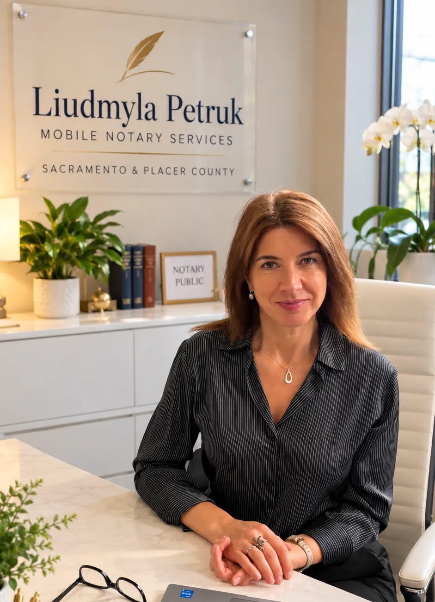
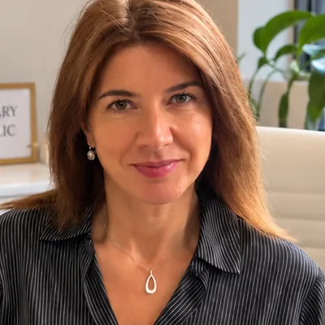

At your door, or at her desk.
Liudmyla Petruk, California Notary Public in Citrus Heights. Mobile notary visits across Sacramento and Placer counties, in English, Ukrainian or Russian.

- Where
- Her Citrus Heights office by appointment, or your home or workplace
- Cost
- Up to $15 per signature by California law; travel quoted first
- When
- Mon–Thu 10 AM–8 PM · Fri 10 AM–6 PM; same-day after confirmation
What she notarizes
Every service explained- Mobile notary visitsAt your home, office or another agreed place in the service area.
- AcknowledgmentsDeeds, agreements, trusts and forms that say "acknowledged before me".
- JuratsAffidavits and sworn statements: you take an oath, then sign.
- Power of attorney notarizationNotarizing a power of attorney you have already prepared.
- General document notarizationConsent letters, business, school and vehicle paperwork.
- Real estate documentsGrant, quitclaim and trust deeds. A journal thumbprint is required.
Being prepared: apostille assistance, hospital and care-facility visits Draft · pending owner confirmation

Her desk or your door
At her desk
Meet in Citrus Heights, by appointment. The address comes with your confirmation.
At your door
Your home, office or an agreed place in sixteen cities and communities. Travel is quoted before you book, and it suits several signers or anyone who cannot easily travel.
Four steps, no surprises
- Ask
Call, text or send a request: the document, how many signers, where to meet.
- Agree
Liudmyla confirms the time, place and full fee. Nothing is booked before that.
- Sign
Each signer brings photo ID and the complete, unsigned document.
- Done
Pay by Zelle, cash or check. The certificate is completed on the spot.
Sixteen places, two counties
Sacramento County
AntelopeArden-ArcadeCarmichaelCitrus HeightsElk GroveFair OaksFolsomNorth HighlandsOrangevaleRancho CordovaRio LindaSacramento
Placer County
AuburnLincolnLoomis*RocklinRoseville
* Loomis pending confirmation. Citrus Heights is the home base.
Fees, plainly
$15
The California maximum per notarized signature, or per person sworn for a jurat. Anything else is quoted and agreed first.
Zelle · Cash · Check, paid at the appointment.
- Notarization fee
- Up to $15per signature (acknowledgment) · per person (jurat oath)
- Mobile travel fee
- Quoted individuallyfor each appointment
- Additional distance
- Confirmed before appointmentfor locations farther from Citrus Heights
- Weekend appointment
- Contact for pricingby prior arrangement only
- Other services
- Quoted individuallyapostille assistance, facility visits, document preparation
Bring these
- A current government photo ID for every signerFor example a California driver license or ID card, a U.S. passport, or another ID accepted under California law. It must be current or issued within the last five years.
- The complete document, unsignedDo not sign in advance unless the document says otherwise. All pages should be present.
- Everyone who needs to signEach signer must appear in person and be able to communicate directly with the notary.
- Credible witnesses, if a signer has no IDCalifornia allows identification by credible witnesses in some cases. Ask Liudmyla before the appointment.
- PaymentZelle, cash or check, for the fee confirmed before the appointment.

Liudmyla Petruk
California Notary Public, based in Citrus Heights, working in English, Ukrainian and Russian.
Every appointment follows the same order: identity first, then the signature or oath, the journal entry and the certificate. She explains each step and does not give legal advice.
About LiudmylaLiudmyla Petruk is a true professional — everything was handled clearly, efficiently, and with great attention to detail.
In clients' words
I had an excellent experience when I did affidavit and notary services with Lyudmila Petruk. It was very professional, efficient, and she made the entire process very smooth.
Excellent experience! Liudmyla Petruk is a true professional—punctual, knowledgeable, and very helpful.
She was incredibly kind, professional, and very fast. The whole process was easy and stress-free thanks to her.
Questions
How much does a mobile notary appointment cost?
California law sets the maximum notarial fee: up to $15 per signature for an acknowledgment and up to $15 per person for a jurat oath. Travel is a separate fee, quoted individually and confirmed with you before the appointment.
What ID do I need?
A current government-issued photo ID, such as a California driver license or ID card or a U.S. passport, or another ID accepted under California Civil Code §1185. Each signer needs their own ID.
Can you tell me which document I need or how to fill it in?
No. A notary is not an attorney and cannot give legal advice or choose documents for you. For legal questions, please speak with an attorney.
Do you offer same-day or weekend appointments?
Same-day appointments may be available after confirmation. Weekends are possible only by prior arrangement, for an additional fee agreed in advance.
Can I come to you instead?
Yes, by appointment in Citrus Heights. The exact address is shared when your appointment is confirmed.
How do I pay?
By Zelle, cash or check at the appointment, after the fee has been confirmed with you. No payment is requested before the appointment is confirmed.
Which languages do you speak?
Liudmyla speaks English, Ukrainian and Russian, so she can communicate directly with signers in any of the three.
Call to arrange a time.
+1 (916) 301-3829Or text the same number, or send a request. Time, place and fee are confirmed before anything is booked.
Mon–Thu 10 AM–8 PM · Fri 10 AM–6 PM
Weekends by prior arrangement